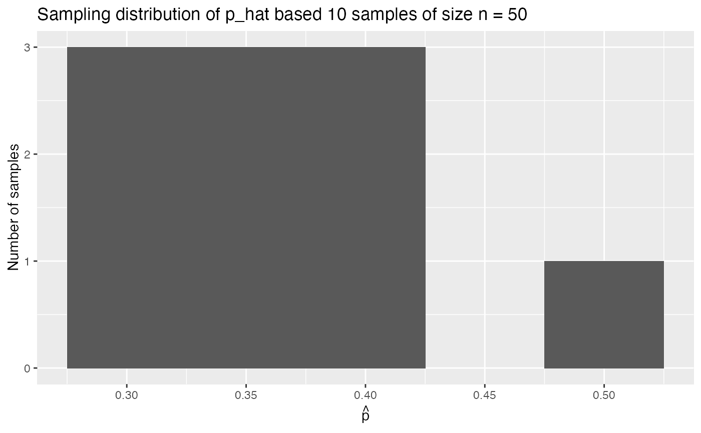

R/bowl.R
A sampling bowl used as the population in a simulated sampling exercise. Also known as the urn sampling framework https://en.wikipedia.org/wiki/Urn_problem.
bowl
A data frame 2400 rows representing different balls in the bowl, of which 900 are red and 1500 are white.
ID variable used to denote all balls. Note this value is not marked on the balls themselves
color of ball: red or white
library(dplyr) library(ggplot2) # Take 10 different samples of size n = 50 balls from bowl bowl_samples_simulated <- bowl %>% rep_sample_n(50, reps = 10) # Compute 10 different p_hats (prop red) based on 10 different samples of # size n = 50 p_hats <- bowl_samples_simulated %>% group_by(replicate, color) %>% summarize(count = n()) %>% mutate(proportion = count/50) %>% filter(color == "red") # Plot sampling distribution ggplot(p_hats, aes(x = proportion)) + geom_histogram(binwidth = 0.05) + labs(x = expression(hat(p)), y = "Number of samples", title = "Sampling distribution of p_hat based 10 samples of size n = 50")